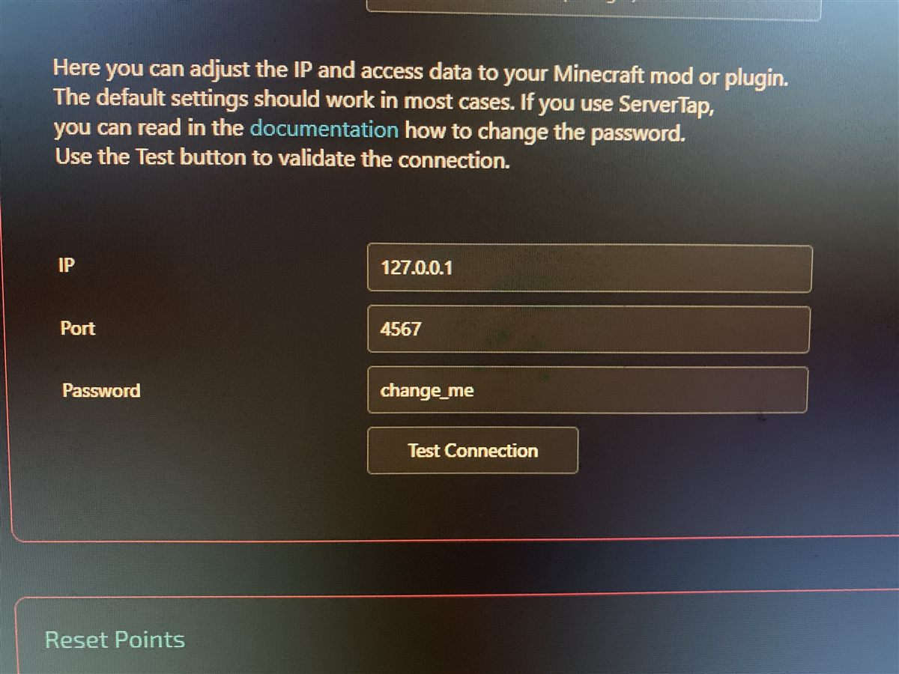

คู่มือใส่ค่า 3 ช่องในหน้า Minecraft Connection ของ TikFinity ให้ต่อเข้าเกมได้ ทั้งเครื่องเดียวกัน ในวง LAN และเซิร์ฟเวอร์ IP นอก
มอดเปิด HTTP server เล็ก ๆ ในเกม (เลียนแบบ API ของปลั๊กอิน ServerTap) แล้ว TikFinity ยิงคำสั่งเข้ามาที่ IP:Port นั้น เวลามีคนกดของขวัญ/ฟอลโลว์/คอมเมนต์ในไลฟ์ TikTok
สรุป: ค่า IP/Port ที่ใส่ใน TikFinity คือ "ที่อยู่ของเครื่องที่รันเกม" ไม่ใช่ IP ของ TikTok หรือของ TikFinity
ไฟล์ jar ตัวเดียวใช้ได้ทั้งสองแบบ วางในโฟลเดอร์ mods เหมือนกัน
ใช้ในเครื่องเล่นเกม
.minecraft/mods (หรือ instance ของ Prism)ไฟล์ตั้งค่า: .minecraft/config/tikfinity.toml
ใช้บนเครื่องเซิร์ฟ / VPS
<โฟลเดอร์เซิร์ฟ>/modsไฟล์ตั้งค่า: <โฟลเดอร์เซิร์ฟ>/config/tikfinity.toml
bindAddress = "127.0.0.1"
port = 4567
password = ""ไฟล์นี้สร้างเองอัตโนมัติตอนรันครั้งแรก แก้แล้วต้องรีสตาร์ทเกม/เซิร์ฟ หรือใช้คำสั่ง /tikfinity restart

| ช่องใน TikFinity | หมายถึงอะไร | ตรงกับค่าไหนในมอด |
|---|---|---|
| IP | ที่อยู่ของเครื่องที่รันเกม/เซิร์ฟเวอร์ มองจากเครื่องที่เปิด TikFinity | ไม่มีค่าตรง ๆ — แต่ต้องเข้ากับ bindAddress ของมอด |
| Port | พอร์ตที่มอดเปิดฟังอยู่ ค่าปกติ 4567 | port |
| Password | รหัสที่ส่งไปกับทุก request (header key) |
password — ถ้าเว้นว่างในมอด ช่องนี้ใส่อะไรก็ผ่าน |
bindAddress ต่างจาก IP ที่ใส่ใน TikFinity ยังไงbindAddress = "มอดยอมรับการเชื่อมต่อจากทางไหน" ส่วน IP ในหน้า TikFinity = "TikFinity จะวิ่งไปหาเครื่องไหน" สองอย่างนี้ต้องเข้ากัน
| bindAddress | ผลลัพธ์ | ใครต่อได้ |
|---|---|---|
127.0.0.1 ค่าเริ่มต้น |
ฟังเฉพาะภายในเครื่องตัวเอง | โปรแกรมในเครื่องเดียวกันเท่านั้น |
0.0.0.0 |
ฟังทุกการ์ดเน็ต — LAN และเน็ตภายนอก (ถ้า firewall เปิด) | ใครก็ตามที่วิ่งถึงเครื่องนี้ได้ ต้องตั้ง password |
192.168.x.x (IP ของเครื่องเอง) |
ฟังเฉพาะการ์ดเน็ตใบนั้น | เครื่องในวง LAN เดียวกัน |
ไม่ต้องแก้อะไรเลย ค่าเริ่มต้นใช้ได้ทันที
| ใส่ใน TikFinity | ค่าในมอด |
|---|---|
IP 127.0.0.1Port 4567Password ปล่อยไว้ ( change_me ก็ได้) |
bindAddress = "127.0.0.1"port = 4567password = "" |
/tikfinity bind all แล้ว /tikfinity password ตั้งรหัสเอง/tikfinity (จะโชว์ 192.168.x.x ให้เลย)| ใส่ใน TikFinity | ค่าในมอด |
|---|---|
IP 192.168.1.42 (ตัวอย่าง)Port 4567Password รหัสของคุณ |
bindAddress = "0.0.0.0"port = 4567password = "รหัสของคุณ" |
mods ของเซิร์ฟ แล้วสตาร์ทหนึ่งรอบให้ไฟล์ config เกิดconfig/tikfinity.toml เป็น bindAddress = "0.0.0.0" และ ตั้ง password ยาว ๆ/tikfinity restart จาก console| ใส่ใน TikFinity | ค่าในมอด |
|---|---|
IP 203.0.113.10 (ตัวอย่าง)Port 4567Password รหัสยาว ๆ |
bindAddress = "0.0.0.0"port = 4567password = "รหัสยาว ๆ" |
ห้ามข้าม: พอร์ตนี้สั่งคำสั่งอะไรก็ได้ในเกม ถ้าเปิดออกเน็ตโดยไม่มี password = ใครเจอพอร์ตก็ยึดเซิร์ฟได้
/tikfinityใช้ได้ทั้งในโลก singleplayer และบนเซิร์ฟ (ต้องเป็น op / รันจาก console) ไม่ต้องเปิดไฟล์เอง
| คำสั่ง | ทำอะไร |
|---|---|
/tikfinity | ดูสถานะ + IP/Port ที่ต้องใส่ใน TikFinity (คลิก IP เพื่อคัดลอกได้) |
/tikfinity bind local | ฟังเฉพาะเครื่องนี้ (127.0.0.1) |
/tikfinity bind all | เปิดให้เครื่องอื่นต่อ (0.0.0.0) |
/tikfinity bind "192.168.1.42" | ระบุการ์ดเน็ตเอง |
/tikfinity port 4567 | เปลี่ยนพอร์ต |
/tikfinity password "รหัส" | ตั้งรหัส (ต้องใส่ค่าเดียวกันในช่อง Password ของ TikFinity) |
/tikfinity password clear | ลบรหัส |
/tikfinity restart | รีสตาร์ท HTTP server หลังแก้ไฟล์เอง |
ทุกคำสั่งบันทึกลงไฟล์และรีสตาร์ท HTTP server ให้อัตโนมัติ — ไม่ต้องปิดเกม
ตั้งผ่าน GUI ก็ได้: Mod Menu → TikFinity Connector → ปุ่มตั้งค่า (ต้องมี Mod Menu + Cloth Config)
netsh advfirewall firewall add rule name="TikFinity 4567" dir=in action=allow protocol=TCP localport=4567รันใน PowerShell/CMD แบบ Run as administrator (ลบกฎ: เปลี่ยน add เป็น delete)
sudo ufw allow 4567/tcpsudo firewall-cmd --permanent --add-port=4567/tcp
sudo firewall-cmd --reloadจากเครื่องที่จะรัน TikFinity:
curl http://<IP เครื่องรันเกม>:4567/v1/serverได้ JSON ที่มี "name": "TikFinity Mod" = ต่อได้ · ค้างหรือ connection refused = firewall ปิด หรือ bindAddress ยังเป็น 127.0.0.1
ถ้าตั้ง password ไว้ ต้องส่งไปด้วย:
curl -H "key: รหัสของคุณ" http://<IP>:4567/v1/server/op, /ban, /stop ทำได้หมด ใครที่ยิง HTTP ถึงพอร์ตนี้ได้ = ควบคุมเซิร์ฟได้
password ทุกครั้งที่ bindAddress ไม่ใช่ 127.0.0.1 — มอดจะเตือนใน log ให้เองchange_me / 1234/tikfinity bind local| อาการ | สาเหตุที่พบบ่อย | วิธีแก้ |
|---|---|---|
| Test Connection ไม่ผ่าน (เครื่องเดียวกัน) | เกมยังไม่เปิด หรือพอร์ตชน | เปิดเกมค้างไว้ที่เมนูก็พอ · เช็ค log บรรทัด TikFinity HTTP server listening on ... |
| Test Connection ไม่ผ่าน (คนละเครื่อง) | bindAddress ยังเป็น 127.0.0.1 หรือ firewall ปิด |
/tikfinity bind all + เปิดพอร์ตที่ firewall |
| ขึ้น Unauthorized / 401 | password ในมอดกับใน TikFinity ไม่ตรง | ใส่ให้ตรงกัน หรือ /tikfinity password clear ถ้าใช้แค่ในเครื่อง |
| เตือน "Port ถูกใช้งาน" ในเกม | มีโปรแกรมอื่นจองพอร์ต 4567 อยู่ (เซิร์ฟที่เปิดค้าง) | ปิดโปรแกรมนั้น หรือ /tikfinity port 4568 แล้วแก้ Port ใน TikFinity ตาม |
| ต่อได้ แต่คำสั่งไม่เกิดอะไร | ยังไม่ได้เข้าโลก / ไม่มีผู้เล่นออนไลน์ | เข้าโลกก่อน · ดู log บรรทัด Received command: เพื่อยืนยันว่าคำสั่งมาถึง |
คำสั่งที่ใช้ ~ ~ ~ ไปโผล่ผิดที่ |
ไม่มีผู้เล่นออนไลน์ คำสั่งเลยรันจากจุด spawn | ให้มีผู้เล่นอยู่ในเกม — มอดจะอ้างตำแหน่งผู้เล่นคนแรก |